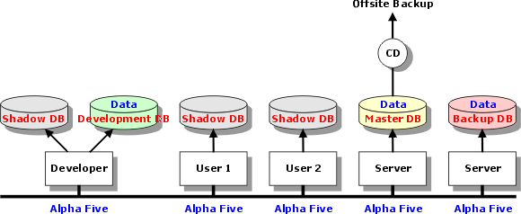

Multi-User Alpha Anywhere Applications
This topic is a collection of recommendations by experienced Alpha Anywhere developers about the best way to create multi-user applications. The following is a diagram of an "optimal" multi-user architecture. The most critical point is the distinction between the computers with real databases and shadow databases.

|
Topic |
Comment |
|
Corruption of shared (networked) tables under Windows 2000, Windows XP, and Windows 2003 |
According to Microsoft Knowledge Base Article - 296264, Configuring Opportunistic Locking in Windows "By default, opportunistic locking is enabled for server message block (SMB) clients that run one of the Windows operating systems that is listed at the beginning of this article. Opportunistic locking allows clients to lock files and locally cache information without the risk of another user changing the file." Experience shows that opportunistic locking should be disabled to prevent corruption when running with Windows 2000, XP, and 2003. The article mentioned above explains how to disable opportunistic record locking. |
|
Shared folders |
Make sure that the folders for the shared databases are shared for full control by all users. Define the drive letters and folder names of the shared folders using addin variables in the autoexec scripts. This provides a common variable pointing to proper paths. If you ever need to move your tables, then all you need to do is to change the reference in one place. Place shadow databases in subfolders in the shadow folder within the a5v5runtime folder. Note : When Alpha Anywhere updates a shadow database, it does not create new subfolders. |
|
Minimizing Network Overhead |
Use Shadow Databases and Lightning Query Optimization. For more thoughts from Jim Chapman, see Minimizing Network Overhead. |
|
Development |
It is a good idea to take backup "snapshots" at frequent stages of the development. |
|
Maintenance |
|
|
Administration |
These are just a few issues to consider from someone who has built a large multi-user database:
|
|
Unique IDs |
Most applications need to generate unique record IDs. Some developers prefer to generate their own unique numbers, rather than using the autonumber feature of field rules. Peter Wayne suggests a comprehensive solution in this article: Program your own Autoincrement field. |
Thanks To
Russ Boehle, Tom Cone Jr., Thomas Henkel, Barry Rochford, Peter Wayne, Steve Workings
See Also
Network Optimization, Minimizing Network Overhead